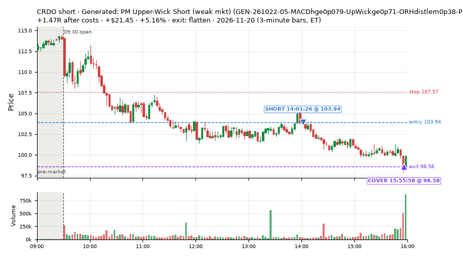
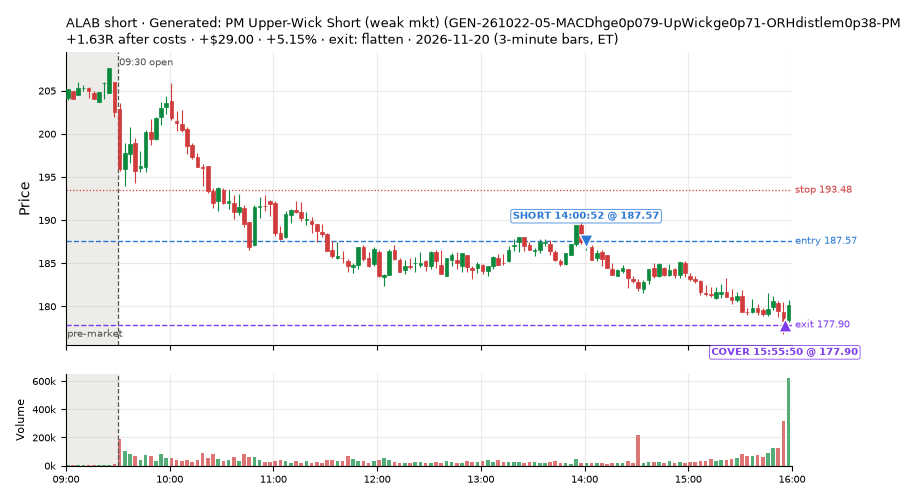
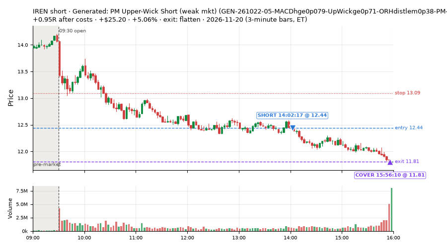
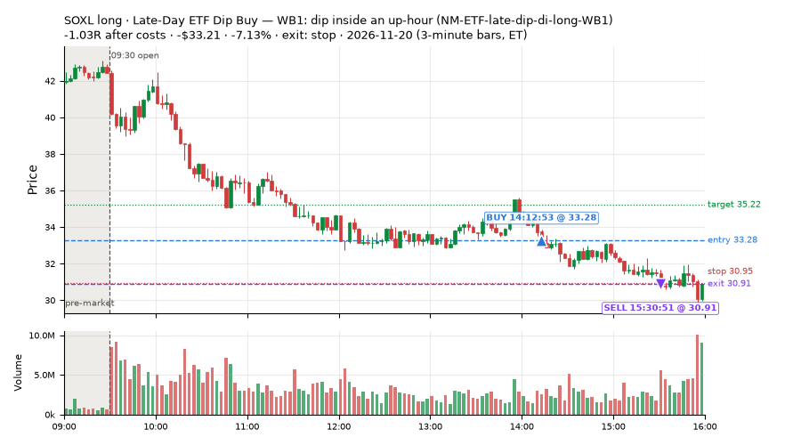
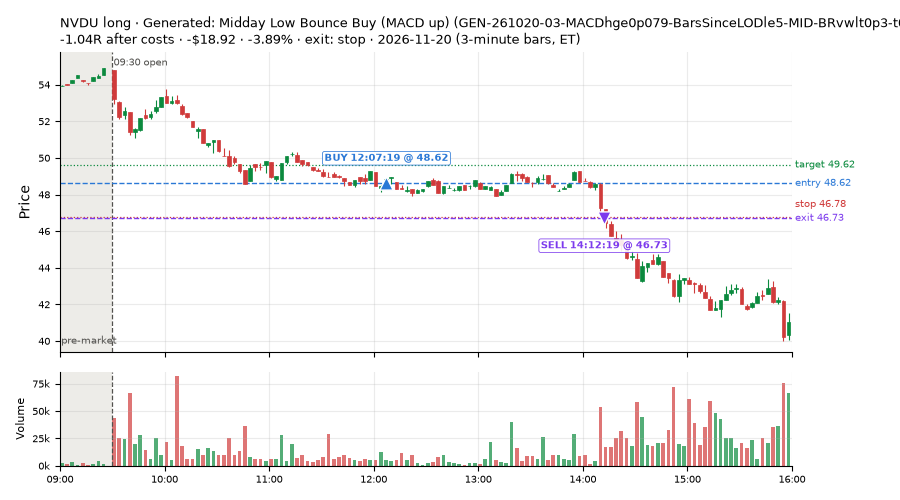
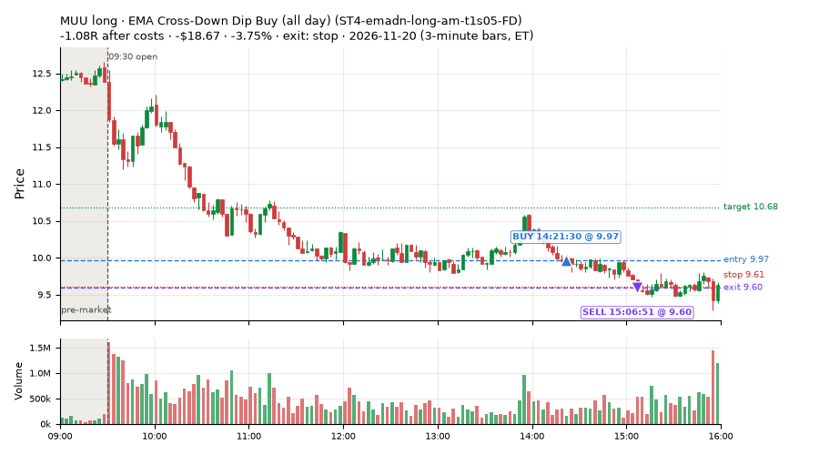
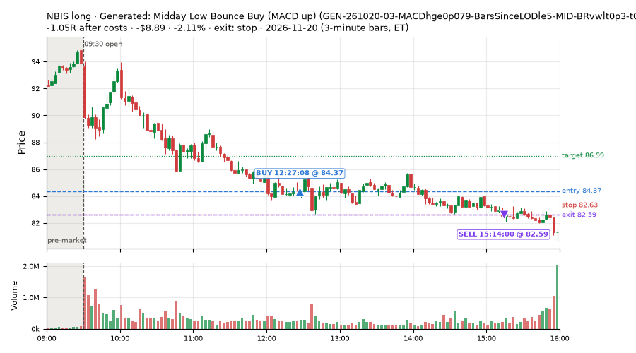
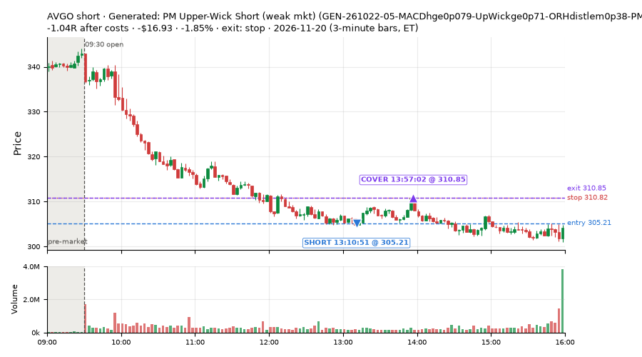

189 trades · win rate 70% · P/L $1,000.38
PROBATION: no live setup has passed both locked test periods. 10 owner-directed setups added 2026-10-08 (MarcoFlow top 5 + 5 new), untested live. RW6G1 (RW6 + VWAP band guard) added 2026-10-09, probation.

| Symbol | Setup | Side | In | Out | Entry | Exit | Exit reason | % gained | P/L |
|---|---|---|---|---|---|---|---|---|---|
| CRDO | Generated: PM Upper-Wick Short (weak mkt) (GEN-261022-05-MACDhge0p079-UpWickge0p71-ORHdistlem0p38-PM-BRoplt0p35-holdtr-short) | short | 14:01 | 15:55 | 103.94 | 98.58 | flatten | +5.16% | $21.45 |
| ALAB | Generated: PM Upper-Wick Short (weak mkt) (GEN-261022-05-MACDhge0p079-UpWickge0p71-ORHdistlem0p38-PM-BRoplt0p35-holdtr-short) | short | 14:00 | 15:55 | 187.57 | 177.90 | flatten | +5.15% | $29.00 |
| IREN | Generated: PM Upper-Wick Short (weak mkt) (GEN-261022-05-MACDhge0p079-UpWickge0p71-ORHdistlem0p38-PM-BRoplt0p35-holdtr-short) | short | 14:02 | 15:56 | 12.44 | 11.81 | flatten | +5.06% | $25.20 |
| Symbol | Setup | Side | In | Out | Entry | Exit | Exit reason | % lost | P/L |
|---|---|---|---|---|---|---|---|---|---|
| SOXL | NM-ETF-late-dip-di-long-WB1 | long | 14:12 | 15:30 | 33.28 | 30.91 | stop | -7.13% | $-33.21 |
| NVDU | GEN-261020-03-MACDhge0p079-BarsSinceLODle5-MID-BRvwlt0p3-t05s05-long | long | 12:07 | 14:12 | 48.62 | 46.73 | stop | -3.89% | $-18.92 |
| MUU | ST4-emadn-long-am-t1s05-FD | long | 14:21 | 15:06 | 9.97 | 9.60 | stop | -3.75% | $-18.67 |
| NBIS | GEN-261020-03-MACDhge0p079-BarsSinceLODle5-MID-BRvwlt0p3-t05s05-long | long | 12:27 | 15:14 | 84.37 | 82.59 | stop | -2.11% | $-8.89 |
| AVGO | GEN-261022-05-MACDhge0p079-UpWickge0p71-ORHdistlem0p38-PM-BRoplt0p35-holdtr-short | short | 13:10 | 13:57 | 305.21 | 310.85 | stop | -1.85% | $-16.93 |








Signal to fill: median 1s, 90th percentile 2s (189 trades). Bars close each minute; the order follows the bar close.
Best excursion (MFE): median 1.05R; worst (MAE) median 0.38R. 14% of trades never got +0.25R in our favour; 3 reached +1R and still closed at or below 0.
| Symbol | Setup | Best R | Worst R | Closed R |
|---|---|---|---|---|
| SNPS | GEN-261020-03-MACDhge0p079-BarsSinceLODle5-MID-BRvwlt0p3-t05s05-long | +2.77 | -1.51 | -1.67 |
| ILMN | GEN-261020-03-MACDhge0p079-BarsSinceLODle5-MID-BRvwlt0p3-t05s05-long | +1.63 | -1.01 | -1.09 |
| ARKG | GEN-261020-03-MACDhge0p079-BarsSinceLODle5-MID-BRvwlt0p3-t05s05-long | +1.01 | -1.10 | -1.18 |
| NBIS | GEN-261020-03-MACDhge0p079-BarsSinceLODle5-MID-BRvwlt0p3-t05s05-long | +0.79 | -1.11 | -1.05 |
| EWY | GEN-261020-03-MACDhge0p079-BarsSinceLODle5-MID-BRvwlt0p3-t05s05-long | +0.62 | -1.03 | -1.10 |
| Entry time | Trades | Win | Avg R | P/L |
|---|---|---|---|---|
| 10:30-11:30 | 2 | 50% | -0.52 | $3.01 |
| 11:30-13:00 | 44 | 55% | +0.02 | $16.49 |
| 13:00-14:00 | 36 | 92% | +0.97 | $297.80 |
| 14:00-16:00 | 107 | 70% | +0.52 | $683.08 |
| Setup | Trades | Win | Avg R after costs | Adj R (net of SPY) | Avg R ex-market (all sessions) | P/L |
|---|---|---|---|---|---|---|
| Stretched Below VWAP Bounce (far) (CWT13-vwapstretch-z075-long) | 25.0 | 0% | -1.10 | -0.36 | -0.30 (beta +1.18, n 60) | $-95.55 |
| Generated: Midday Low Bounce Buy (MACD up) (GEN-261020-03-MACDhge0p079-BarsSinceLODle5-MID-BRvwlt0p3-t05s05-long) | 39.0 | 62% | +0.16 | +0.14 | +0.12 (beta +1.14, n 51) | $39.33 |
| Generated: PM Upper-Wick Short (weak mkt) (GEN-261022-05-MACDhge0p079-UpWickge0p71-ORHdistlem0p38-PM-BRoplt0p35-holdtr-short) | 101.0 | 99% | +1.20 | +0.08 | -0.06 (beta -0.70, n 163) | $1,133.48 |
| Generated: PM Prior-High Dip Buy (QQQ down) (GEN-261023-04-EMAdChglem0p028-PDHdistle0p074-EMAdifflem0p46-PM-QQQltm0p6-t1s1-long) | 1.0 | 0% | -0.73 | -0.01 | -0.69 (beta -0.31, n 25) | $-4.80 |
| Generated: Lunch Failed-Breakdown Short (GEN-261027-08-ORBfailDn-FromPCATRlem0p96-LUNCH-QQQltm0p6-hold-short) | 2.0 | 100% | +1.49 | -0.09 | -0.27 (beta -0.47, n 49) | $20.16 |
| Generated: Midday Choppy Oversold Buy (GEN-261029-02-RSI2le0-VWAPcrossesge9-DayRngVsPrevle0p52-MID-BRvwlt0p4-hold-long) | 6.0 | 0% | -1.02 | +0.19 | -0.49 (beta +0.09, n 39) | $-34.07 |
| Late-Day ETF Dip Buy — WB1: dip inside an up-hour (NM-ETF-late-dip-di-long-WB1) | 5.0 | 80% | -0.00 | +0.06 | +0.33 (beta +1.24, n 6) | $-20.37 |
| EMA Cross-Down Dip Buy (all day) (ST4-emadn-long-am-t1s05-FD) | 7.0 | 14% | -0.84 | -0.35 | +0.07 (beta +1.27, n 28) | $-46.80 |
| RSI Collapse Dip Buy, Nasdaq-below-VWAP only (all day) (ST7Q-rsi50dn-qqqbelowvwap-long-t1s1-FD) | 1.0 | 100% | +0.28 | +0.54 | -0.23 (beta +0.71, n 18) | $4.23 |
| Failed VWAP Reclaim Short, Weak Tape (ULT-09-failed-vwap-reclaim-short) | 2.0 | 50% | +0.07 | -0.00 | – | $4.77 |
Market direction (SPY, beta 1) accounted for $828.15 of today's $1,000.38; the rest ($172.23) came from the setups themselves. Avg R net of SPY: +0.02 (incl. a hedge leg's cost; report only).
23 setups live today. Today: 439 signals, 189 taken, 10 lost because another setup held the symbol (2%). Since 2026-11-05 (12 sessions): 1556 signals, 623 taken, 22 lost to other setups (1%). Peak open positions today 144 of 400 slots. Earnings blackout removed 178 symbols before scanning.
Simulated playing time (not live): 927 what-if trades of signals not taken, avg +0.02R, 53% winners; of them 22 lost to another setup (avg -0.08R).
Silent: GEN-261023-09-ORBfailDn-Ret15mge0p54-LATE-BRvwgt0p7-holdtr-short-WB4, IDX2-spy075-0945-3x-trail, IDX5-spy050-0945-3x-trail, LD4-st4-breadthup-t1s05-long, LD8-spy-dip030-breadthturn-spxl-holdtr-long, GEN-261019-07-VolRatioge2-UpWickge0p59-DayRngVsPrevge1p5-LATE-SPYgt0p5-t05s1-long, GEN-261028-05-EMAdChgge0p093-ORLdistlem0p42-LAM-QQQgt0p6-holdtr-long
| Prio | Setup | Today sig / taken | Sessions | Signals / taken / trades | Taken/day | Expected/day | Lost to other setups | Lost to (setup n) | Top skip reasons | SIMULATED: not-taken n / avg R / win | Verdict |
|---|---|---|---|---|---|---|---|---|---|---|---|
| 1 | Late-Day ETF Dip Buy — WB1: dip inside an up-hour NM-ETF-late-dip-di-long-WB1 | 5 / 5 | 4 | 6 / 6 / 6 | 1.50 | – | 0 | – | – | 0 / – | slow 7.5 entries/week; ~8 weeks to 60 trades |
| 2 | Gap-Down Rebound Overbought Short (all day) — WB4: no thin-R names, RSI(5) ≤ 90, slope ≤ 1.0 L3-gap-slope-rsi5hi-FD-WB4 | 0 / 0 | 4 | 24 / 3 / 3 | 0.75 | – | 0 | – | not shortable / shorts off 19, spread / quote / size 2 | 20 / +0.28R / 80% | slow 3.8 entries/week; ~16 weeks to 60 trades |
| 3 | Generated: Late Failed-Breakdown Pop Short — WB4: 14:30-15:00, pop >= 0.20 ATR, ADX(7) >= 44 GEN-261023-09-ORBfailDn-Ret15mge0p54-LATE-BRvwgt0p7-holdtr-short-WB4 | 0 / 0 | 4 | 0 / 0 / 0 | 0.00 | – | 0 | – | – | 0 / – | silent no signals in 4 session(s); no expected rate on file |
| 4 | Index Dip Bounce 1 TQQQ (hold) IDX1-qqq100-0955-TQQQ-hold | 0 / 0 | 12 | 1 / 1 / 1 | 0.08 | – | 0 | – | – | 0 / – | slow 0.4 entries/week; ~144 weeks to 60 trades |
| 5 | * Oversold Slope Turn after an SPY Dip-Turn (near-miss) LD3-st2-idxturn-t05s1-long | 0 / 0 | 12 | 7 / 5 / 5 | 0.42 | – | 0 | – | spread / quote / size 1, other 1 | 2 / -0.32R / 50% | slow 2.1 entries/week; ~29 weeks to 60 trades |
| 6 | * Oversold Pop with Breadth Turning Up (near-miss) LD1-ns1-breadthup-t05s1-long | 0 / 0 | 12 | 7 / 5 / 5 | 0.42 | – | 0 | – | spread / quote / size 1, price through stop/target 1 | 2 / -0.30R / 50% | slow 2.1 entries/week; ~29 weeks to 60 trades |
| 7 | Generated: Midday Low Bounce Buy (MACD up) GEN-261020-03-MACDhge0p079-BarsSinceLODle5-MID-BRvwlt0p3-t05s05-long | 163 / 39 | 5 | 281 / 51 / 51 | 10.20 | – | 0 | – | spread / quote / size 138, other 86, price through stop/target 6 | 225 / -0.21R / 48% | ok 51.0 entries/week |
| 8 | Backside Lower-High Short CWT04-backside-lh-a15-short | 0 / 0 | 12 | 5 / 0 / 0 | 0.00 | – | 0 | – | not shortable / shorts off 5 | 5 / +0.20R / 40% | slow no entries yet |
| 9 | Generated: Lunch Failed-Breakdown Short GEN-261027-08-ORBfailDn-FromPCATRlem0p96-LUNCH-QQQltm0p6-hold-short | 4 / 2 | 5 | 66 / 49 / 49 | 9.80 | – | 0 | – | other 8, spread / quote / size 6, not shortable / shorts off 3 | 17 / +0.09R / 53% | ok 49.0 entries/week |
| 10 | Generated: PM Upper-Wick Short (weak mkt) GEN-261022-05-MACDhge0p079-UpWickge0p71-ORHdistlem0p38-PM-BRoplt0p35-holdtr-short | 181 / 101 | 5 | 282 / 163 / 163 | 32.60 | – | 12 | GEN-261028-08-Ret5mge0p21-SMA20dlem0p16-Compress6le0p11-LUNCH-BRoplt0p35-holdtr-long 6, GEN-261020-03-MACDhge0p079-BarsSinceLODle5-MID-BRvwlt0p3-t05s05-long 4, ST4-emadn-long-am-t1s05-FD 1 | per-setup cap 41, spread / quote / size 27, other 24 | 119 / +0.63R / 82% | ok 163.0 entries/week |
| 11 | Gap-Down VWAP Loss Short, Slope Filter (near-miss) NM1-cwt09-g10-vwaploss-short | 1 / 0 | 12 | 82 / 5 / 5 | 0.42 | – | 0 | – | not shortable / shorts off 71, other 4, spread / quote / size 2 | 77 / -0.01R / 55% | slow 2.1 entries/week; ~29 weeks to 60 trades |
| 12 | Generated: PM Prior-High Dip Buy (QQQ down) GEN-261023-04-EMAdChglem0p028-PDHdistle0p074-EMAdifflem0p46-PM-QQQltm0p6-t1s1-long | 5 / 1 | 5 | 47 / 25 / 25 | 5.00 | – | 0 | – | spread / quote / size 13, other 9 | 22 / -0.51R / 32% | ok 25.0 entries/week |
| 13 | RSI Collapse Dip Buy, Nasdaq-below-VWAP only (all day) ST7Q-rsi50dn-qqqbelowvwap-long-t1s1-FD | 1 / 1 | 12 | 28 / 18 / 18 | 1.50 | – | 0 | – | spread / quote / size 8, other 2 | 10 / -0.39R / 30% | slow 7.5 entries/week; ~8 weeks to 60 trades |
| 14 | Early NS3 Short While SPY Up (near-miss) NM-RWN3-ns3-spyup-early-short | 1 / 0 | 12 | 25 / 8 / 8 | 0.67 | – | 0 | – | spread / quote / size 8, not shortable / shorts off 7, other 2 | 17 / +0.59R / 82% | slow 3.3 entries/week; ~18 weeks to 60 trades |
| 15 | Generated: PM Gap-Up Dip Buy (MACD falling) GEN-261029-03-MACDhlem0p12-Ret5mlem0p062-Gapge2-PM-QQQup-hold-long | 0 / 0 | 5 | 6 / 3 / 3 | 0.60 | – | 0 | – | other 2, spread / quote / size 1 | 3 / +0.36R / 67% | slow 3.0 entries/week; ~20 weeks to 60 trades |
| 16 | Early Sellers, Mid-High RSI MF2-open-rsimidhi-flowsell | 2 / 0 | 12 | 69 / 16 / 16 | 1.33 | 1.30 | 0 | – | spread / quote / size 21, per-setup cap 19, other 8 | 53 / -0.34R / 26% | slow 6.7 entries/week; ~9 weeks to 60 trades |
| 17 | Generated: Open RSI Surge Short (wide day) GEN-261026-08-RSIslopege19-Ret5mge0p063-DayRngVsPrevge1p2-OPEN-SPYup-holdtr-short | 2 / 0 | 5 | 30 / 13 / 13 | 2.60 | – | 0 | – | spread / quote / size 16, not shortable / shorts off 1 | 17 / +1.82R / 76% | slow 13.0 entries/week; ~5 weeks to 60 trades |
| 18 | Generated: Midday Choppy Oversold Buy GEN-261029-02-RSI2le0-VWAPcrossesge9-DayRngVsPrevle0p52-MID-BRvwlt0p4-hold-long | 8 / 6 | 5 | 53 / 39 / 39 | 7.80 | – | 0 | – | other 8, spread / quote / size 6 | 14 / -0.56R / 29% | ok 39.0 entries/week |
| 19 | Stretched Below VWAP Bounce (far) CWT13-vwapstretch-z075-long | 36 / 25 | 12 | 171 / 60 / 60 | 5.00 | – | 0 | – | per-setup cap 67, spread / quote / size 22, other 22 | 111 / -0.19R / 40% | ok 25.0 entries/week |
| 20 | Down-Stock Volume Spike Buy (all day) ST8-volspikedn-long-pm-t1s1-FD | 0 / 0 | 12 | 30 / 19 / 19 | 1.58 | 1.05 | 1 | MF2-open-rsimidhi-flowsell 1 | spread / quote / size 7, other 2, symbol held by another setup 1 | 11 / +0.01R / 73% | slow 7.9 entries/week; ~8 weeks to 60 trades |
| 21 | EMA Cross-Down Dip Buy (all day) ST4-emadn-long-am-t1s05-FD | 17 / 7 | 6 | 61 / 28 / 28 | 4.67 | 2.77 | 7 | GEN-261022-05-MACDhge0p079-UpWickge0p71-ORHdistlem0p38-PM-BRoplt0p35-holdtr-short 6, GEN-261027-08-ORBfailDn-FromPCATRlem0p96-LUNCH-QQQltm0p6-hold-short 1 | spread / quote / size 14, other 11, symbol held by another setup 7 | 33 / -0.21R / 36% | ok 23.3 entries/week |
| 22 | Failed VWAP Reclaim Short, Weak Tape ULT-09-failed-vwap-reclaim-short | 7 / 2 | 1 | 7 / 2 / 2 | 2.00 | – | 0 | – | spread / quote / size 5 | 5 / +0.28R / 80% | slow 10.0 entries/week; ~6 weeks to 60 trades |
| 23 | Generated: Morning New-High Short (SPY down) GEN-261019-08-NewHOD-Slope6ge0p03-DayRngVsPrevge1p5-AM-SPYdn-hold-short | 6 / 0 | 1 | 6 / 0 / 0 | 0.00 | – | 0 | – | spread / quote / size 5, other 1 | 6 / +2.42R / 83% | slow no entries yet |
Every trade is attached as a CSV you can open and edit in Excel or Google Sheets. Live page: https://misiti15.github.io/MCF/live/